Manual del Vuelo a Vela
Wolf Hirth
1942
Las bases meteorológicas para los grandes vuelos a vela
por
el Prof. Doctor WALTER GEORGII, de Darmstadt
Tres son
las condiciones para el progreso del vuelo sin motor:
1.a El
progreso mismo de los aparatos.
2.a La
habilidad de los pilotos.
3.a La
investigación de las posibilidades de vuelo.
Los
primeros modelos de velero « Blaue Maus », del Ing.-Dipl. Klemperer y especialmente el
« Vampyr », del profesor Madelung, ya hicieron concebir la posibilidad de que el vuelo
sin motor era susceptible de gran progreso. La habilidad de los pilotos descubrió todo
lo que puede hacerse aprovechando las ascendencias orográficas, y el espíritu de audacia
que les animaba les hizo llevar sus veleros delante de un frente tormentoso y penetrar en
las nubes, elevando las marcas del vuelo a vela a centenares de kilómetros de distancia
y a varios miles de metros de altura. La investigación, y especialmente la
experimentación aerológica, abrió al vuelo sin motor nuevos campos de apoyo, y sobre
todo, mostró el camino para el vuelo térmico, que libró al vuelo a vela de su limitada
aplicación sobre las montanas e hizo que, desprendiéndose de ellas, invadiese la
llanura. Resulta así que en el progreso del vuelo sin motor se descubre el efecto
combinado de la acción del piloto, del constructor y del meteorólogo que, entre todos,
han edificado la gran obra de esta rama de la aviación, que es el producto de la
colaboración del deporte, de la técnica y de la ciencia puestos al servicio del vuelo
a vela.
El descubrimiento del vuelo térmico completó nuestro
conocimiento de los medios que el vuelo humano con aparatos sin motor puede emplear
prácticamente (En los últimos años ha tomado también importancia el vuelo con apoyo en
viento ondulado.). Sin embargo, con todo ello no se ha cerrado aún el cielo del progreso
del vuelo a vela superior, pues sin duda el vuelo térmico tiene todavía posibilidades
que aun no se han aprovechado y que tampoco han sido investigadas.
El problema fundamental de la experimentación
aerológica y térmica del vuelo a vela pertenece a la gran cuestión de las energías
térmicas de la atmósfera. En este aspecto son, ciertamente, muchas las modificaciones
que en los últimos años ha habido en el modo de considerar científicamente la
cuestión, las cuales son de mucha importancia para el vuelo a vela, aunque se debe decir
que, en justa reciprocidad, muchos de esos nuevos puntos de vista han sido deducidos
precisamente de la interpretación de los resultados obtenidos con el vuelo sin motor.
Nuestra atmósfera es como una máquina térmica, con su
manantial de calor productor de energía y su correspondiente condensador o manantial de
frío. Esta máquina se puede poner en movimiento mediante los cambios de calor entre las
regiones cálidas de las latitudes ecuatoriales y las frías de las latitudes polares de
nuestra superficie terrestre, cambios que tienen efecto en forma de corrientes calientes
ecuatoriales y corrientes frías polares, las cuales avanzan hacia los Polos y hacia el
Ecuador, respectivamente. Estos cambios de energía, en general, tienen poco efecto útil
para el vuelo sin motor. Tampoco pueden producirse las ascendencias de los frentes
aprovechables en el vuelo a vela, ni el vuelo ante un frente tormentoso, solamente por la
penetración de las masas frías polares en las masas calientes que se hallaban en
reposo y a las que fuerzan a elevarse. Precisamente el estudio de los vuelos a vela
delante de los frentes ha enseñado que ese modo de ver la cuestión no bastaba para
explicar las extensas y violentas ascendencias que llegan a enormes alturas y que se
presentan ante un frente tormentoso. Hay que seguir otro camino para llegar a conocer el
modo de trabajar de esa máquina térmica que es la atmósfera y que da lugar a las
enormes energías cinéticas de las corrientes aéreas que el vuelo sin motor ha puesto en
evidencia.
Si se piensa en que en un día caluroso de verano a 3 ó 4
kilómetros de altura sobre nosotros existe una temperatura por debajo de 0º, se
comprende que los cambios de energía se verifiquen en la vertical y que para el manantial
de calor productor de energía que está en el suelo hay que buscar en la altura el
manantial de frío que le corresponde. La energía cinética aprovechada por el vuelo a
vela en forma de movimientos verticales del aire no representa otra cosa, según lo dicho,
que la transformación de la energía potencial de la atmósfera, debida al escalonamiento
de la temperatura en la altura; energía potencial que en cada lugar será tanto mayor
cuanto más enérgico sea el calentamiento de las capas de aire inferiores y más intenso
el enfriamiento de las capas superiores.
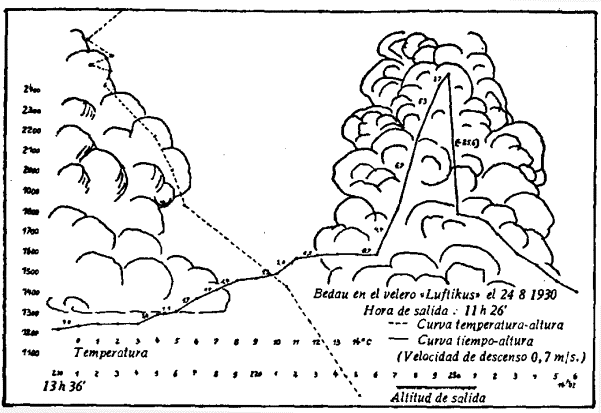
Fig. 96. El piloto Bedau volando el « Luftikus » el día 24 agosto de 1930. Ejemplo de ascendencia de nube en el caso de capas de aire húmedo lábil
La
cuestión, pues, inmediata que se debe resolver es conocer la energía de que se dispone a
consecuencia del régimen de temperatura de las distintas capas de aire y el modo cómo
esa energía se transformará en energía cinética, dando lugar a movimientos de aire
verticales.
El régimen de temperatura cuya transformación dará
lugar a ascendencias térmicas puede producirse por las causas siguientes:
1.a Por calentamiento de las capas de aire inferiores.
Produce el estado de equilibrio lábil de aire seco en las capas inferiores y origina lo
que los pilotos llaman el conocido térmico solar o térmico de radiación, que
se presenta en los días de calma y despejados del verano.
2.a Por aumento del vapor de agua, que se produce o por evaporación
en el terreno o por advección, es decir, por su transporte con los vientos de origen
marítimo. El calor latente del vapor de agua constituye una enorme energía potencial, la
energía de la estratificación lábil del aire húmedo, la cual queda libre en el
fenómeno de la condensación al formarse las nubes y origina la conocida y enérgica ascendencia de las nubes.
3.a Por
enfriamiento en la altura.
Lo mismo
que el calentamiento de las capas inferiores produce un régimen de temperatura en altura
de carácter lábil, así también el fenómeno inverso, el enfriamiento en la altura,
puede dar lugar a la consecuencia de una estratificación lábil en la atmósfera, la
cual se resuelve en ascendencias térmicas. El enfriamiento en la altura puede
producirse o por radiación al espacio de las capas superiores o por la llegada de aire
frío a las regiones superiores. En este caso, se dice en el vuelo a vela que hay térmico de altura, puesto
que en estas circunstancias las ascendencias se producen en alturas importantes
independientemente de las condiciones en el suelo (Estas ascendencias están desde luego
acopladas con las descendencias correspondientes, en la misma forma que ocurre con las
ascendencias y descendencias inferiores). Puesto que el térmico de altura es
independiente de la marcha diurna de la radiación solar, resultará que es también
independiente de la hora del día y de la época del año. Por lo tanto, se podría
presentar ese fenómeno como térmico nocturno y térmico de invierno, y,
de consiguiente, los vuelos a vela serán posibles con apoyo térmico, de noche y en el
invierno.
Lo expuesto ha dado a conocer las más importantes
posibilidades de disponer de manantiales de energía térmica utilizables en el vuelo a
vela y, según el modo de transformación de esa energía, así resultan las distintas
clases de apoyo que se pueden aprovechar para volar, y que son:
Térmico de la tarde, para
vuelos a vela después de puesto el sol.
Viento térmico, combinación
de buenas ascendencias de nubes con gran velocidad horizontal.
Térmico marítimo, que
en especiales condiciones térmicas puede presentarse sobre los océanos.
Ahora se
analizará con detalle cada una de esas posibilidades.
La transformación de la energía potencial de una
estratificación lábil en energía cinética de movimiento vertical exige una causa
determinante de la transformación. Una masa de aire, aunque sea de régimen lábil de
temperatura, si está en reposo, se encuentra en equilibrio; pero si por alguna causa las
masas de aire son elevadas o descendidas, respecto a su posición de reposo, el
equilibrio se perturba y se ceba el movimiento vertical, y esto no es sino la expresión
de que en la atmósfera ocurre lo mismo que en otros fenómenos naturales o de la
técnica, en los que hay un equilibrio lábil; para salir de él hace falta una causa
perturbadora, y tales causas, en lo que se refiere a producir ascendencias térmicas,
existen en gran número sobre la superficie de la tierra. Las pequeñas y las grandes
elevaciones, las colinas y las montañas ocasionan perturbaciones en el equilibrio de un
aire recalentado y dan así lugar a la producción de enérgicas ascendencias térmicas.
Cada diferencia de rozamiento sobre la superficie terrestre, como cuando se pasa del mar
al continente, de la comarca rasa al bosque, del campo a la ciudad, es una causa
resolutiva de la energía de estratificación lábil de las masas de aire. Según las
causas resolutivas de la labilidad y consiguientes movimientos verticales del aire,
puede hacerse la distinción entre:
1.º
Resolución orográfica, que es la producida por elevación forzada del aire en los
obstáculos de la superficie terrestre, colinas, montañas, bosques y edificios o en las
orillas de los caminos en desmontes profundos, anchas fosas, mesetas, etc., por las que
corre el aire encañonado para hacerle desembocar bruscamente sobre llanuras menos
recalentadas, o, finalmente, que el aire procedente de zonas recalentadas pase por
encima del aire frío que cubre otras zonas como pantanos, lagos, etc.
2.º
Resolución turbulenta, producida por el aumento brusco de rozamiento en los límites de
zonas de diferente rugosidad, o el paso del agua a la tierra firme, o, en la atmósfera
libre, por aumento del rozamiento interno del aire en las discontinuidades de corriente,
en donde hay un cambio brusco de velocidad.
3.º
Resolución frontal ; a lo largo de un frente tormentoso con irrupción de aire frío
sobre una masa de aire caliente.
Los
resultados de las numerosas mediciones realizadas con este fin demuestran, con toda
evidencia, que los grandes movimientos verticales de aire de carácter térmico son
debidos a una de las citadas causas de resolución de la labilidad atmosférica.
Naturalmente que las causas más frecuentes de resolución de un estado lábil son las
debidas a las irregularidades de la superficie terrestre (resolución orográfica) y a
las diferencias de rozamiento en las discontinuidades de superficies que lo tienen
desigual.
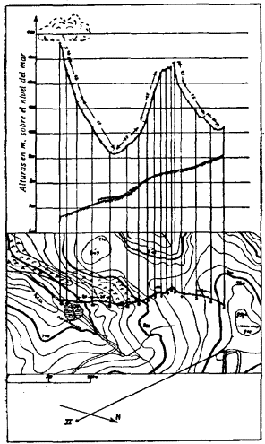
Fig. 97. Globo equilibrado núm. 27 sobre la Wasserkuppe en el día 10 de agosto de 1932
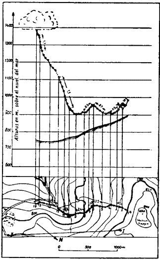
Fig. 98. Globo equilibrado núm. 28 sobre la Wasserkuppe, en el día 10 de agosto de 1932
Primeramente empieza por formarse, en el suelo, una zona
intensamente recalentada en el terreno colindante al bosque y, después de haberse
originado esta capa de aire de intensa labilidad, llega un pequeño impulso, tal como
una racha de viento que al chocar con la masa del bosque, en su linde, que constituye la
discontinuidad entre el campo raso y el bosque, resulta ser la causa determinante de la
resolución de la situación lábil creada: la ascendencia térmica así originada es la
que coge al globo y lo lleva a las alturas.
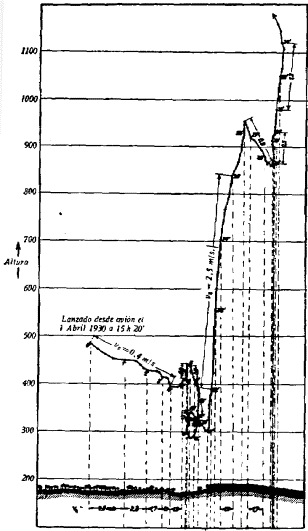
Fig. 99. Diagrama de globo equilibrado con fines de investigación para el vuelo a vela; día 1.º de abril de 1930Las
numerosas experiencias hechas con globos pilotos equilibrados por el DFS en el aeródromo
de Darmstadt, en días de viento flojo del Oeste, demuestran la existencia de un campo de
ascendencia sobre el bosque lindante con aquél. En la figura se ha rayado la zona que
comprende ese campo, en la que la ascendencia es de más de 3 m/seg. (fig. 100).
El estudio de los fenómenos que acompañan a una
resolución del tipo de las señaladas ha conducido también a nuevos puntos de vista,
sobre las circunstancias de las ascendencias delante de un frente tormentoso. Los
primeros vuelos en frente tormentoso fueron explicados por la ascendencia forzada del
aire caliente, que era obligado a subir por la acción de la masa de aire frío que
irrumpía bajo él, resultando así una ascendencia delante de la masa fría. Este punto
de vista se apoyaba sobre el conocido experimento de W. Schmidt; de Viena, el cual ensayó
el fenómeno de la penetración de un fluido denso en otro de menor peso específico.
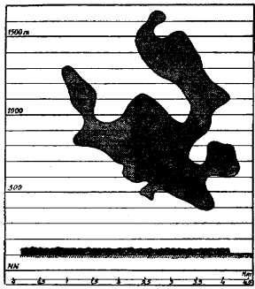
Fig. 100. Ascendencia con situación meteorológica lábil, sobre el linde de un bosque. La zona rayada representa el campo de ascendencia de intensidad superior a los 3 m/s
El estudio
de numerosos barogramas de los vuelos realizados con apoyo en los frentes ha dado la
evidencia de que la elevación forzada de las masas de aire, producida por la penetración
del aire frío en las capas inferiores, no sería suficiente para explicar las
ascendencias de la extensión y altitud que tienen las que preceden a un frente, pues la
intensidad de la ascendencia es mucho mayor que la que podría producir un fenómeno de
esa naturaleza. Las nuevas investigaciones han conducido a otro modo de explicar el
campo de ascendencia. Según este esquema (fig. 101), al frente propiamente dicho, en el
suelo, le precede una masa fría de penetración en la altura.
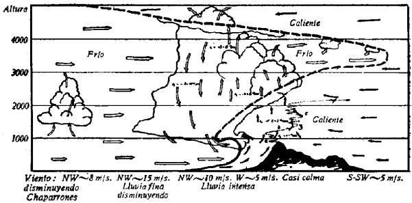
Fig. 101. Esquema representativo de un frente tormentoso, con irrupción de aire frío en la altura y trayectoria de un vuelo con apoyo en este frente
7. Véase el detalle señalado con 3 en la figura, sobre la cúspide de la montaña, entre las líneas de los 1000 y 2000 m. de altitud. El velero envuela inmediatamente después de iniciado el vuelo violento de la tormenta, que comienza poco antes de pasar el rulo de aire. La primera altura la gana con el apoyo en la ascendencia orográfica y, en parte, apoyándose también en la ascendencia de la tormenta. Luego maniobrará de modo a situarse delante del frente tormentoso alcanzando la ascendencia tranquila y regular del cúmulo-nimbo, que se halla 1 o 2 km. por delante del rulo de aire que constituye el frente
El
calentamiento en el suelo y el enfriamiento en la altura causan conjuntamente un estado de
gran labilidad en las capas de aire intermedias, la cual ,se resuelve en un enérgico y
libre movimiento ascensional del aire (Esta denominación es consecuencia del criterio
usado en meteorología para distinguir las ascendencias del aire en libres y forzadas;
según que las causas estén en la misma masa del aire que asciende o sean exteriores a
ella; así una ascendencia térmica es libre y una orográfica es forzada. - N. del T.).
La masa de aire frío que irrumpe en el suelo es sólo la causa resolutiva de la
situación lábil de la estratificación del aire. Con la penetración de este aire frío
continúa la resolución de la labilidad como fenómeno frontal.
El conocimiento de los diferentes procesos que puede
seguir la resolución de una estratificación lábil es de importancia fundamental para
el vuelo a vela térmico, puesto que ese conocimiento hace posible que el piloto de velero
encuentre más fácilmente las ascendencias en días en los que, por no haber nubes, falta
la indicación para encontrarlas.
La energía de labilidad de una masa de aire, que da la
medida de la que puede transformarse en ascendencias térmicas, se deduce de la
representación del estado del aire atmosférico por medio del llamado emagrama (Esta
palabra está compuesta de tres; energía, masa y diagrama y ha sido ideada, así como la
teoría de lo que representa, por el meteorólogo noruego Refsdal. La Meteorología
noruega es de las que más han hecho avanzar a la meteorológica en estos últimos tiempos
. - N. del T.). La figura 102 representa diferentes ejemplos de tales diagramas
en distintos casos de posibilidad de vuelo a vela.
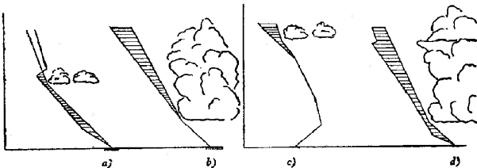
Fig. 102. Diagramas correspondientes a diferentes posibilidades de vuelo a vela térmico. a) Térmica de calentamiento del suelo por radiación solar. Cúmulos de buen tiempo (hora avanzada de la mañana y de la tarde). b) Viento térmico en masas de aire húmedo lábil, de tipo TM (tropical marítimo). Neforrutas y nubes en rollo (primeras horas de la mañana; últimas horas de la tarde). c) Térmica alta a consecuencia de enfriamiento en la altura. Altocúmulos (independientemente de la hora del día y de la época del año). d) Térmica oceánica: temperatura de agua mayor que la del aire. Neforrutas. Nubes en rollo (de noche y primeras horas de la mañana)
En cada
diagrama, que está deducido de la correspondencia entre presión y temperatura (Quiere
decir que una coordenada, la horizontal, es temperatura y la otra, la vertical, es la
presión o, lo que es igual, altura. Por eso en las figuras citadas se dibujan las nubes a
la altura en que se forman y se indica aquélla hasta la que se extienden. - N. del T.)
la curva de la izquierda representa el régimen de temperatura existente en el aire en
reposo y la de la derecha el curso que seguiría la temperatura de una porción de aire
que ascendiese a partir del suelo, la cual se compone de dos partes: la primera representa
la adiabática del aire seco, a la que sigue la adiabática de aire húmedo, una vez que
ha empezado la condensación (Adiabática es la curva que representa una transformación
de esta clase, que en la teoría del calor quiere decir una transformación en la que no
hay cambios de calor con el exterior. En una porción de aire que sube, como su
movimiento es de alguna rapidez, no hay tiempo para que se verifiquen cambios de calor con
la masa que rodea a la que sube, y así al régimen de temperatura es adiabático, de
donde viene el nombre citado. En la obra titulada Meteorología y Vuelo sin Motor, escrita
por el traductor, aparecen curvas y emagramas de ejemplos obtenidos en España, por los
trabajos de su autor. - N. del T.). La zona rayada del diagrama hace visible la energía de
labilidad de la atmósfera, la cual da una medida de la velocidad del movimiento vertical
del aire y de las condiciones de su equilibrio.
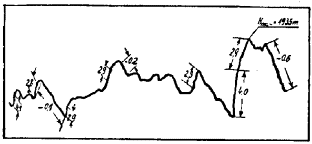
Fig. 103. Barograma de un vuelo a vela con térmica solar. Wolf Hirth volando con el « Grunau Baby », en Río de Janeiro, el día 8 de febrero de 1934, 12,40 a 13,50 horas. (Las indicaciones numéricas representan el movimiento vertical del aire en m/s.)
En días
de térmico solar o de radiación, la repartición de zonas de ascendencia y
descendencia corresponde a las condiciones del terreno y de las causas resolutivas de la
labilidad. Si se presenta el térmico solar con formación de nubes, aparecen los cúmulos
repartidos desigualmente. El barograma de un vuelo a vela térmico con apoyo en
ascendencias de esas condiciones indica la desigual repartición de las zonas de aire
ascendente y descendente, con grandes oscilaciones de la altura de vuelo (fig. l03).
Repetidamente los pilotos han observado la existencia de
térmicos vespertinos en los días de buen térmico solar. Las curvas de la figura 104
correspondientes a 2, 17 y 21 de julio y 19 agosto de 1914, dan la explicación del
térmico vespertino después de la puesta del sol.
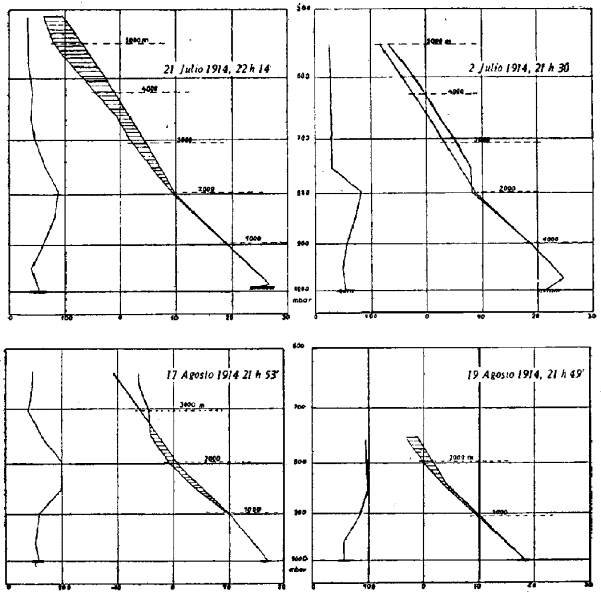
Fig. 104. Diagramas representativos de estados atmosféricos con buena ascendencia térmica en las horas del anochecer, después de un día de buena radiación solar
El térmico
vespertino representa un resto del térmico, existente en la altura, a consecuencia
del calentamiento diurno. En esos ejemplos se ve que, a pesar de la estabilidad de las
capas inferiores de aire resultante del enfriamiento a la caída de la tarde, hay en la
atmósfera, por encima de los 1000 m. de altura, una labilidad creciente. La
transformación de esta labilidad en movimientos verticales libres no puede tener
efecto, como ocurre durante el día, por la acción de las capas inferiores, ahora en
equilibrio estable. Sin embargo, la acción resolutiva puede ser de carácter orográfico,
por montañas de suficiente altura para llegar a las capas lábiles y que, entonces, la
desviación producida en el viento sea la causa determinante de la ruptura del
equilibrio. Por consiguiente, el térmico vespertino se ha aprovechado para volar a
vela desde las montañas. Muchos vuelos que fueron ejecutados en los concursos del Rhön
en forma de un tranquilo vuelo a vela a gran altura, durante las horas de la caída de la
tarde, se explican fácilmente por la existencia del. térmico vespertino.
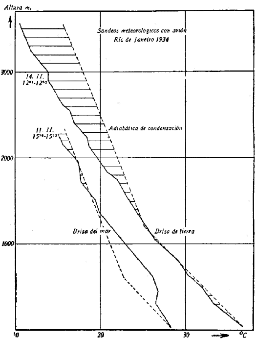
Fig. 105. Diagramas
explicativos de los fenómenos térmicos en las costas, con el cambio diario de las
brisas de la tierra y del mar
Además de
la resolución orográfica, se concibe la posibilidad de que puedan existir también las
causas de turbulencia por una discontinuidad de viento en las capas superiores de la
atmósfera. Finalmente, pueden obrar asimismo como causa resolutiva las últimas
ascendencias nacidas en el suelo, que necesitan casi una hora para llegar al reposo y que
seguirán su ascendencia en la altura, como todas las que vengan después, hasta llegar
a la estabilidad de las capas superiores.
La expedición alemana a Río de Janeiro observó un
fenómeno análogo al térmico vespertino. En Río de Janeiro hay, durante el día, una
alternancia sistemática de vientos. En las horas de la mañana sopla viento de tierra
procedente del interior, y a mediodía o en las primeras horas de la tarde sopla viento o
brisa del mar. Durante el tiempo que sopla la brisa de tierra hay excelentes posibilidades
de vuelo a vela, porque las capas inferiores se recalientan mucho y adquieren una
situación lábil; en cambio, en cuanto empieza la brisa del mar cesan bruscamente las
ascendencias térmicas, bastando una débil brisa de mar para que tenga efecto el cambio
de circunstancias. La explicación está en las curvas de la figura 105 correspondientes a
11 y 14 de febrero de 1934. Con la brisa de tierra, en 14 de febrero, la atmósfera tiene
estado lábil de aire seco hasta 1000 m. de altura y, a partir de aquí, intensa
labilidad de aire húmedo y, por tanto, se pueden producir intensas ascendencias por
causas resolutivas que se produzcan en el suelo. Con brisa marítima, en la tarde del 11
de febrero, las masas lábiles inferiores hasta los 500 m. han sido barridas por masas de
aire marítimo fresco que han estabilizado la situación junto al suelo y, como indica la
curva de puntos representativa del curso de la temperatura en una porción de aire
ascendente, no pueden presentarse ya ascendencias a partir del suelo. Pero, por encima de
los 1500 m., podrían presentarse ascendencias si hasta esa altura fuesen elevadas las
porciones de aire por causas exteriores, y, a partir de ahí, habría ya ascendencias
libres. Pe modo que, según lo expuesto, la brisa marítima frena completamente la
tendencia que a partir del suelo pudiese haber a producir movimientos verticales. Las
desfavorables circunstancias para el vuelo a vela que encontró la expedición alemana en
las costas tropicales, durante las horas de la tarde, demuestran que la resolución de
una estratificación lábil se debe a causas que radican en el suelo. La estabilización
de aire por la brisa marítima explica también la extraordinaria y notable calma del aire
que se observa en un avión que vuele en las costas tropicales, a pesar de la intensa
radiación solar, y aunque el vuelo se realice sobre una gran ciudad, siempre que no sea a
mucha altura. También se explica, por lo dicho, la exigua cantidad de tormentas en las
costas tropicales, como ocurre, por ejemplo, en la costa oriental de América, todo lo
cual es debido a la influencia de la brisa marítima. La alternancia de las dos brisas, de
tierra y de mar, limita, pues, considerablemente las posibilidades del vuelo a vela. La
misma observación se pudo hacer en la expedición alemana de vuelo sin motor a Libia,
en 1939.
Hasta aquí el vuelo a vela estaba esencialmente limitado
a las horas del día y a la estación cálida del año, puesto que aprovechaba solamente
el térmico procedente de la radiación solar. Sin embargo, la inestabilidad térmica
puede también ser independiente del calentamiento del suelo por enfriamiento de las
capas superiores. Este fenómeno conduce al vuelo a vela de altura. La curva
representativa de un estado favorable para el térmico de altura está reproducida en la
figura 102 c. Los primeros ensayos de vuelo con térmico de altura los hizo el DFS
en el verano de 1934.
El velero « Präsident » fue remolcado hasta los 2600 m.
y en el barograma del vuelo se puede ver que la velocidad ascensional aumenta notablemente
en los 2400 m. Después de desembragar, el velero se mantuvo algún tiempo a la altura en
la que venía remolcado. De la curva se deducen velocidades del aire ascendente de 1,4
m/seg., entre los 2400 y 2500 m. de altura y de 0,5 m/seg. en la altura máxima. En este
mismo aspecto, son de gran belleza las observaciones recogidas por el avión de sondeo
atmosférico de la estación meteorológica de Hamburgo. E. Frankenberger publicó en los
comunicados de 1934 del Servicio meteorológico alemán de aviación la interpretación
de un barograma de vuelo, según el cual el avión, en las primeras horas de la mañana,
se hallaba a 5000 m. de altura bajo bancos de alto-cúmulos e iba encontrándose, a
distancias regularmente espaciadas, con ascendencias y descendencias en sucesión
regular. La velocidad de las ascendencias era de hasta 2 m/seg. (fig. 106).
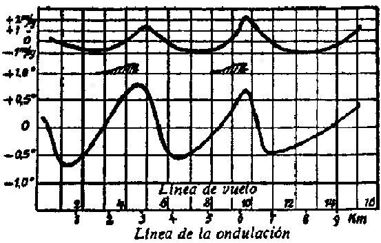
Fig. 106. Interpretación de un barograma de vuelo meteorológico del Servicio alemán de meteorología aeronáutica, 1934
Estos
resultados impulsan hacia nuevos ensayos en el mismo sentido. Puesto que el vuelo a vela
de altura es independiente de la radiación solar, se abre al vuelo sin motor un campo
de posibilidades durante la noche y en el invierno. El DFS dispuso la ejecución de
numerosos vuelos térmicos en el invierno de 1935, cuya interpretación está todavía en
curso de ejecución. También se ha empezado la experimentación con los vuelos
nocturnos.
En el concurso del Rhön de 1934 se hicieron, por primera
vez, vuelos de distancia de más de 300 km. Cuatro años fueron precisos para superar la
marca de Günther Groenhoff. La interpretación de esos vuelos ha demostrado que fue
posible ejecutarlos gracias a condiciones atmosféricas especiales, que fueron la
combinación de un buen térmico con gran velocidad de viento, medio por el cual los
veleros alcanzaron gran velocidad de crucero y pudieron cubrir grandes distancias en el
tiempo limitado que dura el térmico. Las velocidades medias alcanzadas por los veleros
que hicieron más de los 300 km. fueron, en kilómetros-hora: « Rhönadler», 56;
«Moazagotl», 57 ; «Präsident», 61, y «Sao Paulo», 67. Esas especiales condiciones
de combinación de buen térmico con velocidad horizontal pueden ser designadas con el
nombre de « viento térmico ». Resultado de mucha importancia para el vuelo a vela es el
haber comprobado que en esa situación de la atmósfera tienen efecto múltiples
fenómenos de resolución de una estratificación lábil. Mientras que en los otros
modos vistos hasta aquí de resolución de una labilidad las ascendencias y descendencias
están repartidas de manera irregular, en el viento térmico se observa cierta
regularidad en la repartición de ascendencias. La intensa labilidad de la atmósfera,
unida a la gran velocidad del viento, se resuelve por grandes rulos de aire regularmente
ordenados. Estos rulos o torbellinos de aire, cuyos ejes están en la dirección del
viento, forman extensas neforrutas, que para el piloto de velero son como carreteras de
ascendencias, en las cuales encuentra condiciones de aire ascendente de bastante
regularidad sin que en ellas pierda altura y, por consiguiente, pudiendo volar a lo largo
de ellas sin perder tiempo alguno en detenciones. El problema de la formación de las
nubes alineadas o neforrutas es considerado actualmente como uno de los temas más
importantes que tiene ante sí el vuelo a vela.
P. Idrac ha hecho ver de un modo experimental la
formación de tales rulos en una corriente de aire, en sus Investigaciones
experimentales sobre el vuelo a vela, haciendo el experimento lanzando aire entre dos
placas, una caliente y otra fría. También llama la atención sobre este fenómeno Sir
Gilbert Walker (Cloud-Natural and Artificial. « Nubes naturales y artificiales
»).
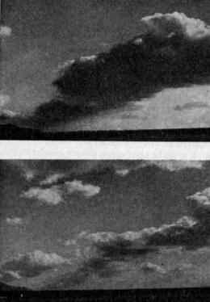
Fig. 107. a y b: Neforrutas indicadoras de la existencia de «viento térmico», combinación de buena térmica con gran velocidad de viento Sus
investigaciones experimentales son de importancia fundamental para explicar la formación
de las neforrutas y marcan el camino para continuar la teoría de esta forma de nubes. En
el Establecimiento alemán del vuelo a vela existen numerosas fotografías de nubes
alineadas y también se disponen de resultados de interpretación de los ensayos hechos
para explicar su formación. Son condiciones necesarias para ello la existencia de una
masa de aire húmedo en estado lábil y en movimiento y que, en la altura, esté limitada
por una inversión de temperatura. El hecho comprobado de que simultáneamente se formen y
desaparezcan varias líneas de nubes paralelas, independientemente de las circunstancias
del terreno, da motivo para atribuir tales fenómenos a causas dinámicas y gran
probabilidad de certeza a la idea de que la formación de una neforruta sea el resultado
de la resolución de otras líneas de nubes inmediatas situadas a determinada distancia
dependiente de la altura de la capa de aire lábil (fig. 107 a y b).
Los barogramas proporcionados por veleros que volaron a lo
largo de neforrutas se diferencian mucho de los barogramas de los vuelos térmicos
normales. Mientras que estos últimos presentan, en correspondencia con la técnica del
vuelo a vela térmico, grandes oscilaciones en la altura, los barogramas de vuelos
apoyados en neforrutas, a consecuencia de la continuidad del campo de ascendencia,
presentan variaciones muy pequeñas de altitud y en esto está su ventaja para los
grandes vuelos de distancia (Los veleros de concurso de elevadas cualidades que hoy
existen permiten también librarse de la limitación impuesta por el curso de las
neforrutas y pueden cubrir grandes distancias solamente con apoyo térmico de la acción
solar.). Sin detenerse para ganar nuevamente altura, el velero que sigue una neforruta
conserva su altura y puede, así, en corto tiempo, recorrer gran distancia. El
Establecimiento alemán del vuelo a vela ha observado neforrutas de 75 km. de longitud, y
la interpretación de los vuelos de 300 km. del concurso del Rhön de 1934 hizo ver
ampliamente que todos ellos fueron realizados con viento térmico, que representaba el
movimiento de masas de aire calientes y húmedas de origen tropical, transportadas hasta
Europa desde el océano Atlántico al sur de las Azores. Las masas de aire llevaban
consigo la energía calorífica de aquellas latitudes tropicales, energía que, en el
Continente, se transformaba en las enérgicas ascendencias observadas. También fue debido
a condiciones térmicas análogas el vuelo de marca de altura realizado en el Brasil por
Dittmar, pues lo realizó en una masa de aire caliente y húmedo de origen tropical.
Esta uniformidad de interpretación de distintos vuelos de distancia, llevados a cabo en
días diferentes, conduce a la certeza de suponer que en latitudes elevadas pueden
presentarse las condiciones favorables para el vuelo térmico a consecuencia del
transporte de masas de aire calientes y húmedas de procedencia tropical. Y esto significa
también que, en los países en los que existe el monzón se presentarán, en el verano,
condiciones especialmente favorables para vuelos a vela térmicos que cubran grandes
distancias, siendo principalmente esos países los Estados Unidos de América del Norte,
la costa meridional y oriental de Asia, India y China y, en el hemisferio Sur, el Brasil.
En estos países el transporte de masas de aire caliente y húmedo de origen tropical en
el verano no es un fenómeno aislado de pocos días, como en Europa Central, sino que es
una propiedad característica de esa estación del año (El monzón es uno de los
fenómenos meteorológicos más antiguamente conocidos por el hombre; Aristóteles daba ya
la fecha del principio y fin del monzón en muchas localidades. Como se sabe, se llama
así al viento que, con asombrosa regularidad, cambia de dirección con la época del
año, debido a la diferente situación de la repartición de presiones de carácter
estacionario. Además de las zonas de monzones citadas en el texto existen la de Australia
y la del Mediterráneo oriental, conocida ésta desde la más remota antigüedad, dando
lugar a vientos de componente Norte que hoy se sabe son producidos por la depresión
estival de la India y que son conocidos con el nombre de Etesios.- N. del T.).
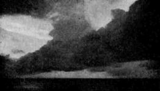
Fig. 108. Una neforruta que se extiende por todo el cielo, de horizonte a horizonte, y representa un ejemplo del caso de « térmica oceánica »
Durante el
viaje de regreso de la expedición alemana de vuelo a vela a Sudamérica hubo ocasión de
fotografiar, en la zona tropical del océano Atlántico, neforrutas que se extendían por
todo el cielo, de horizonte a horizonte, en forma completamente característica (fig.
108), y basándose en esta observación se adquirió el convencimiento de que sería
posible intentar hacer vuelos a vela sobre la zona tropical del océano. Las condiciones
para que se presenten ascendencias sobre el mar o el llamado térmico del océano son
distintas a las de los continentes, pues a consecuencia de la inercia térmica del agua
dependen mucho menos de las circunstancias debidas a la radiación solar que de la
temperatura del agua en relación con la del aire. En cualquier zona del Océano en la que
la temperatura del agua sea superior a la del aire pueden originarse ascendencias
térmicas. En las capas inferiores del aire, en contacto con la superficie del agua, se
origina un gradiente térmico lábil que, añadido al efecto del calor de condensación
que queda libre, puede ocasionar gran labilidad de la atmósfera. Como la superficie del
océano es regular, los fenómenos de resolución de la labilidad son también mucho más
regulares que sobre el continente, cuyas distintas zonas no se calientan por igual, y por
consiguiente se observarán sobre el Océano, con mucha más frecuencia, rulos de aire
producidos por la ruptura del equilibrio térmico (Se llama gradiente térmico al
descenso de temperatura por 100 m. de elevación. El gradiente adiabático es de 1º por 100; si el gradiente es mayor que éste, el equilibrio de
estratificación es lábil; si es igual, es indiferente y si es menor, la estratificación
es estable. El concepto expuesto por el autor corresponde al primero de los casos
citados. - N. del T.). Si usted tiene deseos de volar en planeador, no
dude en contactarnos
Los ensayos de vuelo a vela sobre el Océano solamente
podrán llevarse a cabo en zonas donde haya poco oleaje, circunstancia que se verifica
frecuentemente en la zona tropical, y, desde luego, el modo de envolar será por
remolque con avión. En el Establecimiento alemán del vuelo a vela se ha construido un
hidrovelero con el cual se han hecho ensayos de envuelo a partir del agua en un lago,
con resultados completamente satisfactorios.
Aun cuando para el vuelo a vela no se puedan esperar otros
manantiales de energía que los que existan en la atmósfera, el estudio de las
condiciones aerológicas en el vuelo térmico ha demostrado que la utilización de las
energías en la atmósfera no se puede suponer agotada ni mucho menos. Hasta ahora
solamente se han aprovechado con amplitud las simples ascendencias térmicas y la térmica
solar o de radiación, pues el viento térmico permite aún grandes progresos en el vuelo
a vela, cuando se tenga mayor experiencia sobre él. El térmico nocturno, de altura y
de Océano, está todavía en período de estudio y no es posible hacer pronósticos
sobre su futura utilización.
Información de contacto
Enviar correo electrónico a
joseiotero@hotmail.com con preguntas o comentarios sobre este
sitio Web.
Última modificación:
26 de Febrero de 2006